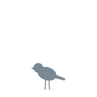

먹이 날라 줘
포란 중 내 에너지 덜 듦
기준: 대표 지시 #611 · 07(판 화면 한 장)의 2차. 명세: screens.md 6.4 · 6.6. 내용(선택지·숫자·문구)은 기존 와이어 02 · 03 · 04 · 05와 같다 — 바뀐 것은 틀(550 결정 영역 → 상태 바 아래 최대 576 시트, 피드 없음). 숫자·문구는 자리를 보여 주는 예시.
확률·예상치 자리 터치 영역 44px 이상
.choice 그대로 — 문장이 있어서 패 카드(ui-kit 3.1, 52px)에는 안 들어간다.gate.seasonPolicy.none 글, 비활성. 고르면 "계절 방침: {이름}".
.opt 줄 / 주 버튼 gate.<kind>.go. 줄 내용은 03·04 C 그대로.| 지금 | 첫째 ♀ | |
|---|---|---|
| 나이 | 3세 | 0세 |
| 1년 생존 | 77% | 48% 낮아짐 |
| 짝 | 있음 | 없음 |
| 스탯 합 | 212 | 96 낮아짐 |
| 잠재력 | 다 씀 | 비행 A~B |
| 노화 위험 | ×1.3 | ×1.0 |